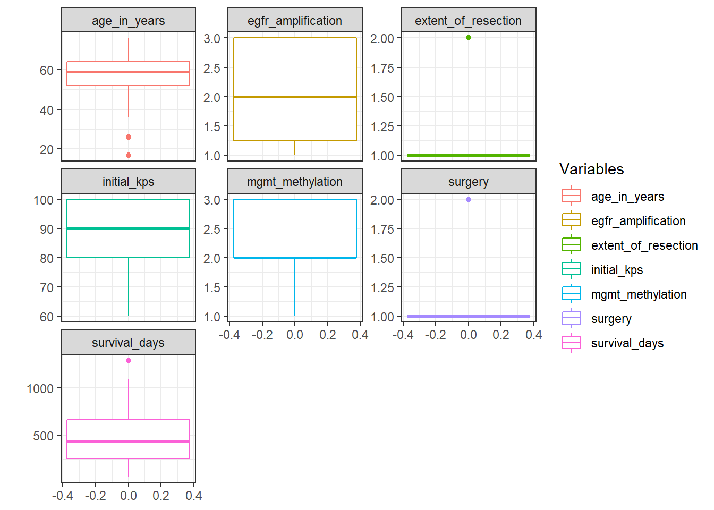

Glioblastoma cancer clustering EDA
Glioblastoma is the most deadly type of brain cancer. Usually affects 50 and 70 year old population, and it is one of the fastest growing cancer since it affects the brain glia cells (often fast-growing and invasive). This time we will try to create a clustering and hierarchichal classification of patients.

Scan of an advanced Glioblastoma
1. Collecting data
We will use the public database from Columbia University:
Here we have a 42x10 database. It is rather a small sample, but we can make a good classification model with it.
2. Preprocessing
Some problems with the original database can be observed. There are too many factorial strings and just two columns of integers (survival_days and initial_kps). We have to convert them into numeric columns in order to continue our analysis properly:
tumor$age_in_years <- tumor$age_in_years %>%
gsub(pattern = " yrs", replacement = "") %>%
as.numeric()
# Some columns to numeric
tumor <- as.data.frame(tumor)
ind <- c('extent_of_resection', 'surgery', 'mgmt_methylation', 'egfr_amplification')
tumor[ind] <- lapply(tumor[ind], as.numeric)Now we have to deal with missing values in the survival_days variable. We have four options here:
- Remove the values.
- Fill it with correlation values.
- Fill it exploring the similarity between variables.
- Use tools to handle those values.
In first instance, let’s explore the correlation method. To this effect we have to assess whether there are significant correlations or not.
tumor_m <- tumor %>%
filter(!is.na(survival_days)) %>%
select(-1, -2, -3)
# Correlation matrix
tumor_cor <- as.matrix(cor(tumor_m, use = 'complete.obs'))
# Get lower triangle of the correlation matrix
lower_tri<-function(x){
x[upper.tri(x)] <- NA
return(x)
}
# Draw the correlation plot
tumor_cor %>%
lower_tri() %>%
melt() %>%
ggplot(aes(x = Var1, y = Var2, fill = value)) +
geom_tile() +
geom_text(aes(label = round(value, 2))) +
theme_minimal() +
theme(axis.text.x = element_text(angle = 45, hjust = 1),
axis.title = element_blank(),
panel.grid.major = element_blank(),
legend.justification = c(1, 0),
legend.position = c(0.4, 0.7),
legend.direction = "horizontal",
plot.title = element_text(size = 20)) +
labs(fill = 'Pearson\nCorrelation') +
scale_y_discrete(position = "right") +
scale_fill_gradient2(low = 'red', mid = 'white', high = 'steelblue', na.value = NA,
midpoint = 0, limit = c(-1, 1)) +
ggtitle('Correlation Matrix', subtitle = 'Tumor database')There are quit few significant correlations. In this scenario is quite hard to create a good predictive model. Let’s explore a bit further the relation between mgmt_methylation and survival_days since that’s the highest correlation.
tumor_m %>%
ggplot(aes(mgmt_methylation, survival_days)) +
geom_point() +
geom_smooth(method = 'lm', se = FALSE, size = 2) +
theme_bw() +
theme(plot.title = element_text(size = 20)) +
ggtitle('MGMT Methylation vs. Survival Days',
subtitle = 'r = 0.43')It seems the higher the MGMT Methylation index, the higher the probability to survive over 2 years since the moment the cancer is diagnosed. However, the sample size is too small to conclude that this correlation is strong enough.
tumor %>%
ggplot(aes(survival_days)) +
geom_density(fill = 'steelblue', color = 'darkblue', size = 1.2) +
geom_vline(aes(xintercept = mean(survival_days, na.rm = T)), size = 2, colour = 'red',
lty = 'dashed') +
geom_vline(aes(xintercept = median(survival_days, na.rm = T)), size = 2, colour = 'orange',
lty = 'dashed') +
theme_bw() +
theme(plot.title = element_text(size = 20),
axis.title.y = element_blank()) +
labs(x = '# of survival days') +
ggtitle('Survival Days Density Plot',
subtitle = 'Mean: 495.5 days\nMedian: 439.5') The distribution doesn’t follow a normal distribution. This could be due to the small size of the sample, so we should use a non-parametric model to fit the data if we want to predict the number of survival days.
# Create a boxplot with all numeric variables
tumor %>%
gather(key, num, extent_of_resection:age_in_years) %>%
ggplot(aes(y = num, col = key)) +
geom_boxplot() +
theme_bw() +
labs(col = 'Variables', y = '') +
facet_wrap(~ key, scale = 'free_y')## Warning: Removed 10 rows containing non-finite values (stat_boxplot).
With all these boxplots we can make a profile of the standard glioblastoma: an adult between 50 - 65 years old, with no remarkable problem with his daily life and who has a survival expectancy between 300 - 700 days, with some unusual cases of long survival rate. Most of them go through one surgery, with an average initial KPS of 90.
Copyright © 2019 David Valls Lanaquera All rights reserved